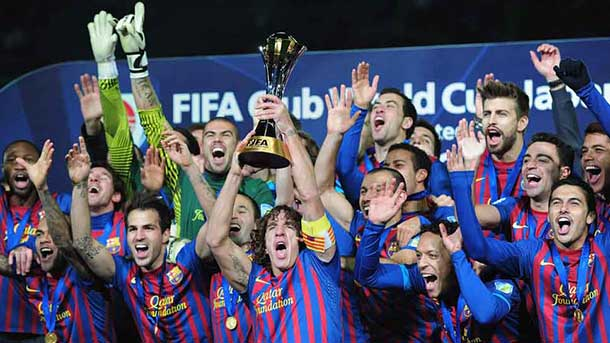
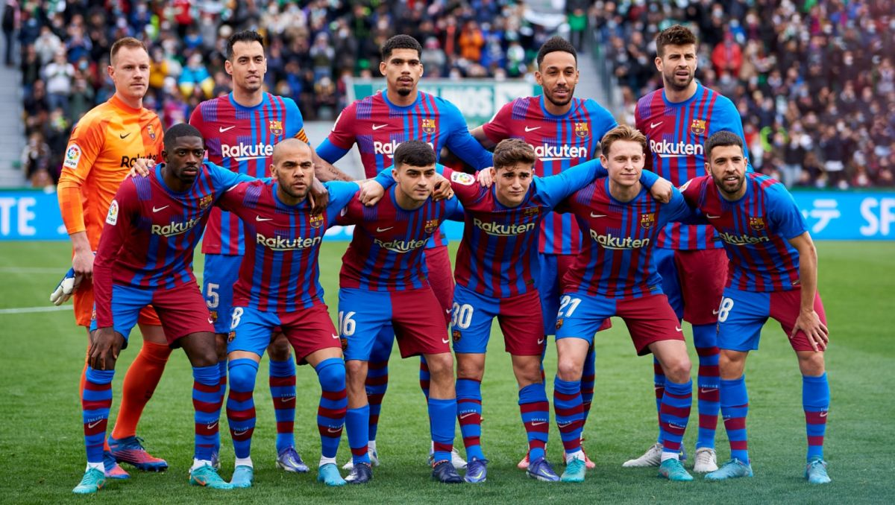
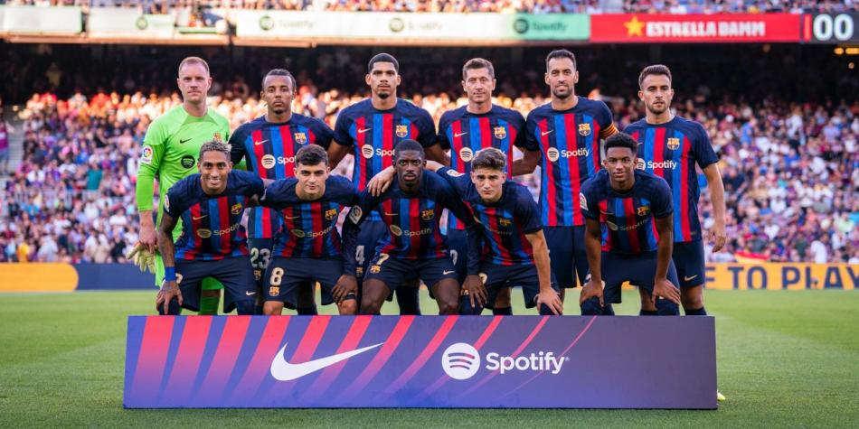

Tot el camp, és un clam
Para entender la importancia del estatuto del FC Barcelona es importante entender su historia: En 1899, Joan Gamper, un hombre suizo, decidió introducir el fútbol en Barcelona mediante la creación de un equipo. El club fue fundado oficialmente el veintinueve de noviembre de 1899. Creció y cobró fuerza, ganando títulos como la Copa Macaya en 1902, la Copa de los Pirineos en 1910 - 1912. El FC Barcelona construyó su primer estadio en 1909 con una capacidad de 6.000 personas. Durante la década de 1920 la fama y el éxito del equipo creció. Ganaron la primera Liga del Campeonato en la temporada 1928 - 1929. Con la nueva popularidad del club fue necesario construir un nuevo estadio. En 1922 se construyó el estadio 'Les Corts', con una capacidad de 22.000 personas. Es importante recordar que el FC Barcelona ha sobrevivido a una Guerra Civil. En 1936, las tropas de Franco fusilaron al presidente del club, Josep Sunyol, debido a su pertenencia a un partido de izquierda.
  Todos los aficionados del FC Barcelona se enorgullecen de lo que se llama la Temporada de 'Cinco Copas'. Éste fue el período entre 1951 - 1952 cuando el FC Barcelona ganó la Copa, la Liga, la Copa Latina, la Martini Rosso y la Eva Duarte. En 1957 se construyó el Camp Nou, con una capacidad inicial de 90.000 personas. El éxito de Barcelona ha cobrado fuerzas. En 1983 el equipo fue capaz de permitirse a jugadores como Bernd Schuster y Diego Maradona. En 1988 - 1989 la llegada del legendario Johan Cruyff como entrenador del equipo vio muchos cambios realizados en el equipo. El Barça se fortaleció y ganó muchas competencias. Los aficionados del Barça comenzaron a cantar "ahora tenemos un nuevo equipo". En 1996 - 97, dos recién llegados al equipo tuvieron un efecto de refuerzo: Bobby Robson en el banquillo y Ronaldo en el campo. Este fue un año exitoso para el equipo. En 2003, una nueva ola de jugadores se unió al equipo. Entre ellos, Rijkaard y Ronaldinho, Puyol y Xavi. En 2004 - 2005 jugadores como Deco y Eto'o se unieron al equipo. En la temporada 2004 - 2005 el FC Barcelona ganó la liga. Esto sucedió otra vez en 2005 - 2006 cuando el club ganó la liga otra vez y la Copa Europea en París.